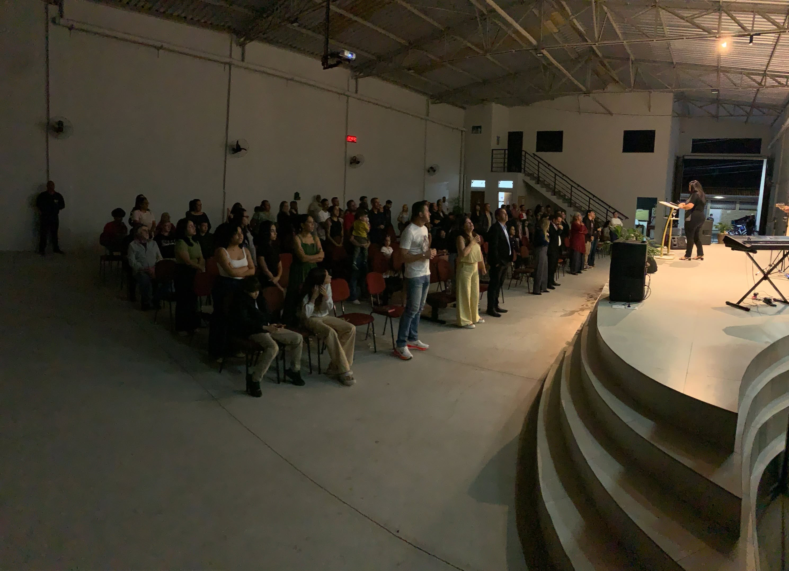

Culto de celebração para toda a família.

Lorena, SP
Igreja Apostólica Caminho Verdade e Vida
Uma família para viver a fé, receber cuidado e caminhar com Jesus em comunhão.
Participe
Cultos e encontros
Acompanhe a programação da semana pelos canais oficiais e venha celebrar conosco.
Culto de palavra, oração e fortalecimento espiritual.
Encontro com Deus e busca pela presença do Espírito Santo.
Nossa casa
Somos uma família
A Igreja CVV existe para acolher pessoas, anunciar Jesus Cristo e fortalecer famílias por meio da palavra, da oração e da comunhão.
Fé
Uma vida centrada em Jesus.
Comunhão
Gente caminhando junto.
Cuidado
Um lugar para recomeçar.
Visite a CVV
Estamos esperando por você
Rua do Ipê, 70, bairro Cruz, Lorena-SP. Para dúvidas, fale conosco pelo telefone ou pelas redes sociais.